Drinking Water State-Federal-Tribal Information Exchange System (DW-SFTIES)
DW-SFTIES ESP User Guide
Version 1 – Release 0.21.00
Last Updated 2/18/2026
U.S. Environmental Protection Agency
Office of Water / Office of Ground Water and Drinking Water
Drinking Water State-Federal Tribal Information Exchange System (DW-SFTIES) ESP
2 DW-SFTIES Primacy Agency Admin Access 3
3.2.1 Basic Individual Information 7
3.2.2 ESP User Role Assignments 8
5 Drinking Water Sample Jobs 11
5.3 ESP Jobs Specific Functionality 16
5.3.1 Sending Draft Job To Certifier 16
5.3.2 ESP Return to Preparer 17
6.1 Refresh Reference Values in the Excel Template 21
6.2 Generate JSON file from ESP Excel Template 22
7 ESP Advanced Sample Search Page 23
Revision History
| Version | Date of Revision | Description of Change | Author | Reviewed By Date |
|---|---|---|---|---|
| 1.0 | 02/21/2026 | |||
Primacy agency roles are managed at the DW-SFTIES level and include permissions such as ESP Primacy Admin (ROLE_ESP_PRIMACY_ADMIN_WRITE) and ESP Compliance Officer (ROLE-ESP_PRIMACY_CO_WRITE). However, these roles currently function in a read-only capacity within ESP, as primacy agencies cannot view data until it has been submitted by a Lab or PWS.
To utilize ESP, Primacy Agency users need access to the Lab/PWS roles, such as ESP Lab/PWS Admin (ROLE_ESP_ADMIN_WRITE), ESP Preparer (ROLE_ESP_PREPARER_WRITE) or ESP Certifier (ROLE_ESP_CERTIFIER_WRITE). This requires coordination between two primacy agency users. NOTE: The preceding sentence is only valid during the testing phase and will be updated in the future as ESP is fully built out
Coordination between two primacy agency users
Navigate to DW-SFTIES > System Admin > User Management.
Select your User ID to edit, and on the Manage User page, select Assign Role.
Assign the ESP Primacy Agency Admin role with a Start Date in the past and no End Date.
Figure 1: User Role Assignments grid with the new ESP Primacy Agency Admin role outlined in red

Save. You now have access to the ESP module.
Add a co-tester into ESP who already has DW-SFTIES access:
Navigate to ESP > ESP Users.
From the User Type dropdown, select All Non-ESP Users.
Figure 2: User Type dropdown
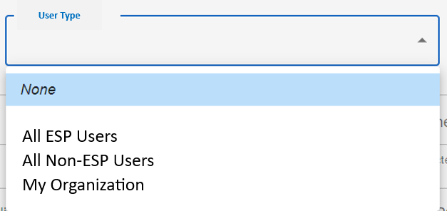
Find the co-tester by their CDX username.
On the co-tester’s Manage ESP User page, select Create ESP User Role Assignment.
For the Role: Select ROLE_ESP_ADMIN_WRITE.
For the Organization: Select the Link icon ( ) by Organizations to pull up the Organization Search
modal. Select a PWS only.
) by Organizations to pull up the Organization Search
modal. Select a PWS only.
Figure 3: Radio buttons to switch the Organization list display options

Save by selecting Create New ESP User. Your co-tester now has ESP access as a PWS Admin.
The co-tester can now assign you a PWS role for the same organization that they are assigned to.
Have the co-tester log into ESP > ESP Users.
On the User Type dropdown, have the co-tester select All ESP Users and find you.
On your Manage ESP User page, have the co-tester select Create ESP User Role Assignment.
Role: ROLE_ESP_ADMIN_WRITE, ROLE_ESP_PREPARER_WRITE, or ROLE_ESP_CERTIFIER_WRITE
Organization: Only the organization that you assigned to the co-tester will be available. Use the radio buttons to find it.
Save. You now have the option to test with PWS access.
Users with role groups that grant them Read or Write permissions to ESP User can view ESP user in the Electronic Samples Portal Users search grid, via the ESP > ESP Users module.
Users may sort and filter different columns like User Profile ID, First Name, Last Name, Active, etc.
Note: The User Type dropdown includes three options: My Organization, All ESP Users and All Non-ESP Users.
My Organization (default): Displays only users within the current organization.
All ESP Users: Displays all users in ESP, including those from other labs or organizations. This is used when adding existing ESP users to the current organization.
All Non-ESP Users: Displays users with DW-SFTIES access only (no ESP access). This is used when adding Primacy Agency users to the current organization.

Users with role groups that grant them Read and Write permissions to ESP User can create ESP user in the Electronic Samples Portal Users search grid, via the ESP > ESP Users module and selecting Create ESP User button.
When creating a new ESP user, required fields on the Create New ESP User wizard page must be entered for the ESP user to be saved.
User ID: The User Profile ID
Must be unique
Must match CDX username
Active Indicator: Defaults to active
Basic Individual Information
ESP User Role Assignment
After saving the ESP user, the following data quality checks occur:
Required User ID, Active Indicator, Basic Individual Roles and ESP User Role has been provided.
User ID is unique.
If the save is successful, the system will return the user to the Manage ESP User page.
Note: The following validations occurs when adding a new user through the ESP sub-module
When adding a PWS/Lab/Read Only Role, the user should only be able to assign 1 active role per PWS or Lab organization.
Users can only have one active Role per PWS/Lab organization. A user can not have multiple ACTIVE (no end date, or an end date that has not passed) roles associated to an organization
Example: A user cannot be an active ESP Certifier and an active ESP Read Only user at Accutest Labs.
Roles Impacted: PWS/LAB/Read Only Roles - ESP_ADMIN, ESP_PREPARER, ESP_CETIFIER, ESP_READ ONLY
When adding a Primacy Agency Role, the user should only be able to assign either a ESP_PRIMACY_ADMIN or ESP_COMPLIANCE OFFICER.
Primacy Agency Roles - ESP_PRIMACY_ADMIN, ESP_COMPLIANCE_OFFICER
Example: A user cannot be an active ESP PRIMACY ADMIN and an active ESP COMPLIANCE OFFICER user in the UT schema.
If a user has a Primacy_Admin or Primacy_compliance _officer Role they cannot be assigned a Lab or PWS Preparer or Certifier Role.
If a user has a Primacy_Admin or Primacy_compliance_officer Role, they cannot be assign a Read Only Role for PWS or LAB to themselves. Only an ESP_ADMIN for a lab or water system may add a Read_Only role for their organization(pws/lab).
If the user has both a Primacy Agency role and a Read Only role the Primacy Agency role should become the primary "current organization". Even if its created Second.
No Organization Assignment can be assigned to a ESP_PRIMACY_ADMIN or ESP_COMPLIANCE OFFICER.
Basic Individual Information includes data pertaining to a ESP user like first name, last name, active status, etc. The uniqueness criteria are the Individual ID and Name.
There are two ways to add basic individual information.
Through Link Individual button (if the legal entity already exists)
Please follow the steps below:
Click on Link Individual button 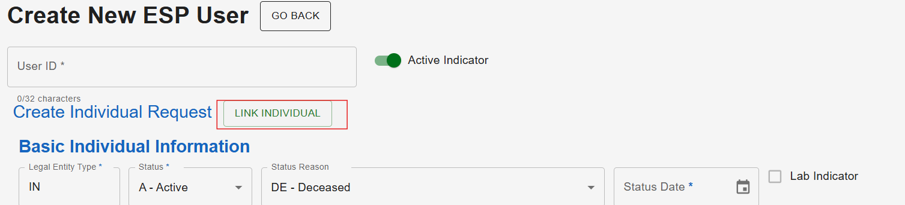
Select the existing legal entity legal entity from the Link
Existing Individual popup 
By entering the information manually

Field Information:
The following fields are required to save data on page:
First Name: User’s first name.
This field is required for federal reporting.
Last Name: User’s last name.
This field is required for federal reporting.
Individual ID: The user’s individual ID
This field is required for federal reporting.
Individual Status: The legal entity’s activity status, such as Active or Inactive.
Status Date: Date of status.
The following fields are optional to save data on page:
Status Reason
Title
Middle Initial
Suffix
Professional Title
Alias Name
To add a role for the ESP user, click on the Create ESP User Role Assignment button
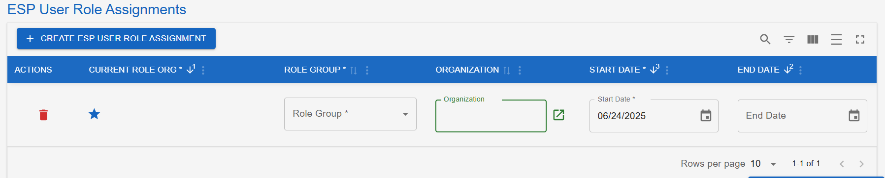
Field Information:
The following fields are required to save data on page:
Current Role Org: An Indicator, such as a star icon, that functions similarly to the Current Regulating Agency Indicator in DW-SFTIES that informs users which Role/Organization association they are currently working under. For example, A user can switch their indicator to switch from working as a Certifier user for Accutest Labs, to being a Read-Only user for Smithfield City.
If users only have one role/organization, then the current indicator will default to that one.
A user’s current role/organization assignment will save between sessions.
Users can only have a current org that is within the start and end date (if there is an end date).
Role Group: ESP role groups, such as ESP Lab/PWS admin
Can not edit an existing role group.
Existing Role Groups are
ESP Lab/PWS Admin
ESP Lab/PWS Preparer
ESP Lab/PWS Certifier
ESP Read Only
ESP Primacy Agency Admin
ESP Primacy Agency Compliance Officer
Start Date: The begin date that the role and organization association begins.
Dates are allowed up to 30 days in the future.
Organization: The organization that the user is submitting data for.
ESP Primacy Agency Admins will be able to select from all Agencies/Organizations.
ESP Lab/PWS Admin’s will only be able to select organizations that they are assigned to.
Users can not have multiple ACTIVE roles under an organization. For example, a user can not be an active ESP Certifier and an active ESP Read Only user at Accutest Labs.
Can not edit an existing organization.
The following fields are optional to save data on page:
End Date: The last date that the role and organization association ends.
Users with role groups that grant them Write permissions to ESP Users can edit a ESP User by navigating to the Electronic Samples Portal Users search grid, via the ESP > ESP Users module, and selecting the gray pencil icon next to a ESP user.
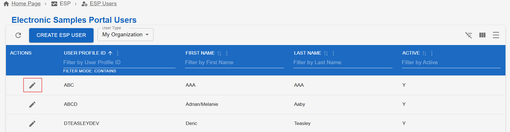
This will open a user’s Manage ESP User page, which displays all of the ESP user’s information.
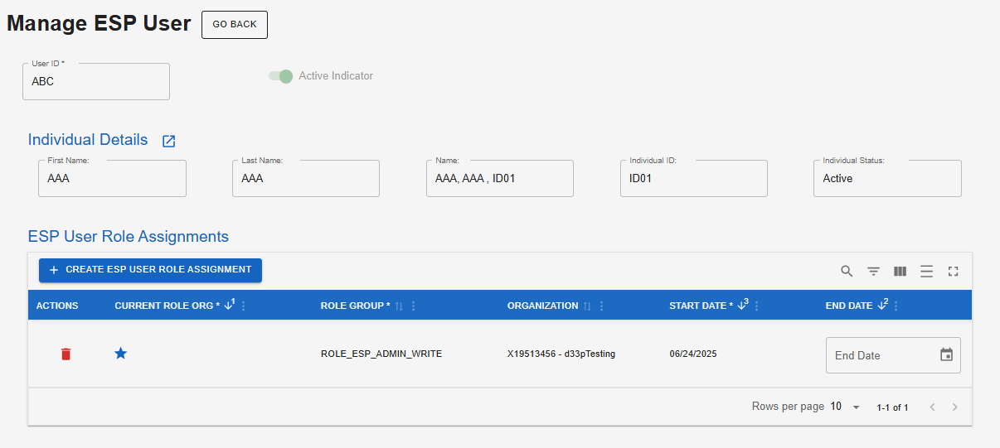
Notes on editing:
You can only add or delete the User Role Assignment for the user.
The Save button will remain gray until edits are made. Once edits are complete, click the Save button to save the changes. Once, edits are saved the user will remain on the Manage ESP User page.
To return to Electronic Sample Portal Users module, select the GO BACK button. If the user has made edits without saving and attempts to go back, a warning message will appear asking if the user wants to leave without saving.
The ESP Module contains a My Profile page that can be accessed from the navigation menu via ESP > My Profile. This page allows users to change their current working organization. Users must have ESP permissions to access this page.
If users have multiple role assignments then users can set the desired role as their current role assignment by selecting the Star icon.
Figure1: Star icon indicating that the ROLE_ESP_ADMIN_WRITE role group is set as Current

The following data validations will occur:
Users will be prevented from selecting a role organization as current that has an End Date in the past.
This system module contains information about Jobs, sample types within a Job, record details, and access to Validation and Errors reports. A Sample Job comprises one or more samples containing one or more sample results for one or more analytes.
Users with role groups that grant them Write permissions to the Drinking Water Sample Jobs can add a Sample Job from the ESP > Drinking Water Sample Jobs and selecting the Create Job button.
Notes:
Users must be assigned to a Primary Water Source Organization or Lab Organization and have one of the following roles:
ROLE_ESP_PREPARER
ROLE_ESP_CERTIFIER
ROLE_ESP_ADMIN
Please follow the steps below to add a sample job
Navigate to ESP > Drinking Water Sample Jobs > Create Job. 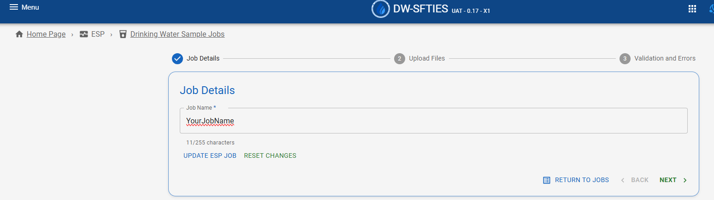
Enter Job Name: “<Name>”, click Next, and verify that a Job Creation success message displays.
Figure 1: Job Creation success message
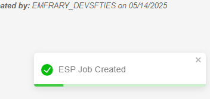
Choose a way to add samples to the job by selecting either the
Upload File or Enter Sample option
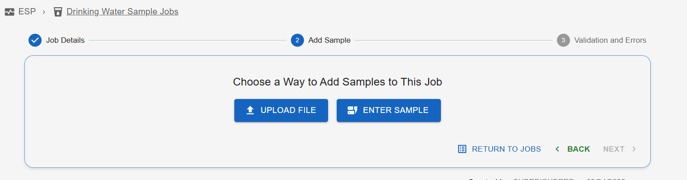
Enter Sample: If user selects “Enter Sample” then they need to
select if it is a Microbial or General Chemical sample

Fields
The fields in the Add Sample Wizard are similar to the Manage Sample page in the Sampling > Sampling List page.
If the user selects “Upload File” then the user can upload their desired file in the Upload Files step of the Wizard: 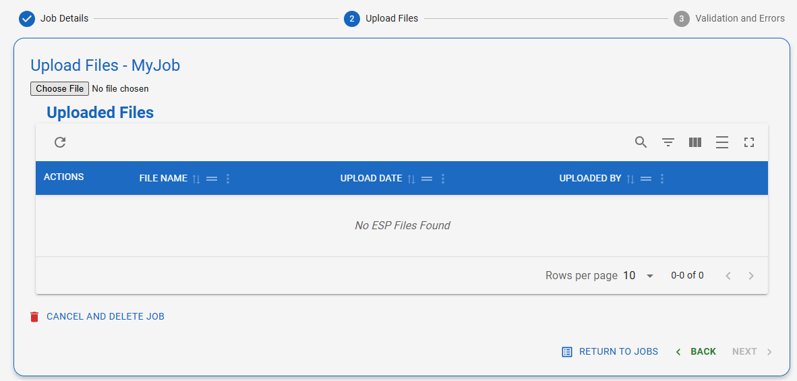
Select Choose File and upload a valid JSON file.
Select Upload and confirm the file populates the grid.
Note: If there are structural errors in the file (For Example: Value exceeds max length, wrong data type etc) then users won’t be able to proceed to the next step. In this scenarios, users will have to delete the file and start over
The Next button becomes enabled. 
Select Next to proceed to the Validations and Errors step. 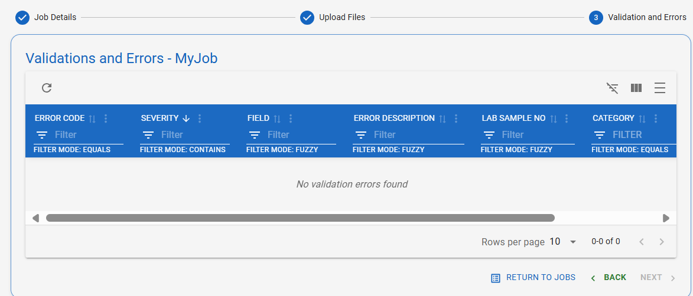
Note: If your upload file includes Validation error (For example: Duplicate Analyte in Analysis Result, etc) then you would see those errors and information relevant to those errors on Validations and Errors page. You wouldn’t be able to upload the sample with errors
Select Return to Jobs to exit the Wizard.
Explore using the Actions column on the Drinking Water Sample Jobs page:
Upload File: Renavigates users to the Upload File step of the Wizard to add additional files.
Add Sample: Users can update the Job name (e.g., add “v2”), click Save, and confirm the name updates in the grid.
Delete: Deletes the Job, the file, and all associated data. Do not delete until you have tested the next steps. If you do delete, you can repeat steps 1-6 to recreate the Job.
Select View Job Details to be taken to the Sample Job Details page where the list of samples in the file will be displayed.
On the Sample Job Details page, select View Sample from the Actions column to display a read-only version of the Basic Sample information.
Notes on Sample Jobs:
If no structural errors are present in the file upload, the file is displayed in a grid with the following columns: Actions, File Name, Upload Date, Uploaded By. The Next button will become available to progress to the Validations and Errors step.
Users can upload multiple files in one Job.
Users with Preparer, Certifier or Lab/PWS Admin roles can edit the Job Name and Delete a Job when the Job is in the Draft Status.
Users can send the Jobs in “Draft” status to a certifier for review as follows:
Navigate to ESP > Drinking Water Sample Jobs > Create Job.
Locate the job on the Drinking Water Sample Jobs grid. In the Actions column, select “Send to Certifier” to advance the Job to the next step of Job progression.
Figure: Screenshot of the “Send To Certifier” link in the Actions column
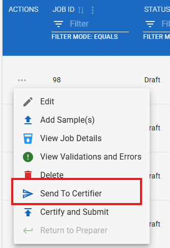
In the modal that pops up titled “Send Data to Certifier”, select an Individual from the dropdown.
Select Send to Certifier to submit the job for review.
The status of the Job changes to “Review”, and “Send to Certifier” is greyed out of the Actions column.
Figure: Screenshot of the “greyed out Send to Certifier” link in the Actions column
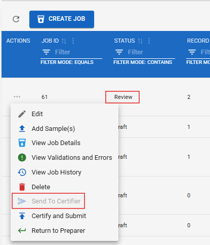
An ESP Certifier(user who was selected as certifier in the Send To Certifier option) can send jobs in the “Review” status back to the preparer for correction.
Navigate to ESP > Drinking Water Sample Jobs > Create Job.
Locate the job on the Drinking Water Sample Jobs grid. In the Actions column, select “Return to Preparer” to advance the Job to the next step of Job progression.
Figure: Screenshot of the “Return to Preparer” link in the Actions column
In the modal that pops up titled “Return Data to Preparer”,
select an Individual from the dropdown and provide the reason for
return.
Figure: Screenshot of the “Return Data to Preparer” modal

Select Return To Preparer to return the job back to preparer.
The status of the Job changes to “Draft”, and “Return to Preparer” is greyed out of the Actions column.
Figure: Screenshot of the “greyed out Return to Preparer” link in the Actions column
Users can see the comprehensive history of modifications made to the job as follows:
Navigate to ESP > Drinking Water Sample Jobs.
In the Actions column of the desired Water Sample Job, select
View Job History.
Figure : Screenshot of the View Job History link the Actions
column
User will be able to see all the information associated with the
job in the Job History page.
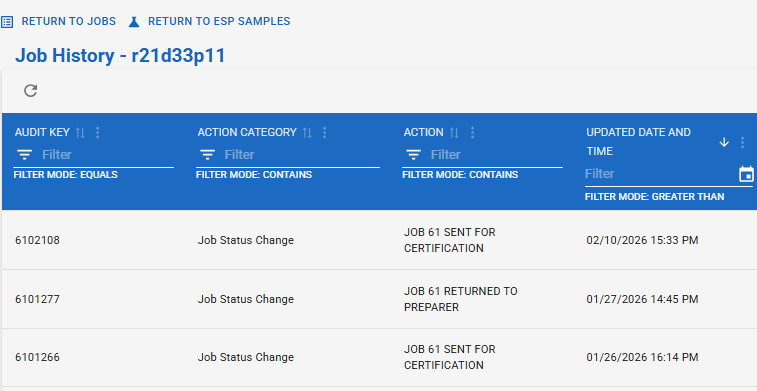
Users with role groups that grant them Write permissions to
the Drinking Water Sample Jobs can edit a Sample Job
from the ESP > Drinking Water Sample Jobs, clicking
on the three dots  next to the sample job and
selecting Edit option.
next to the sample job and
selecting Edit option.
Note: Only the Job Name can be edited.
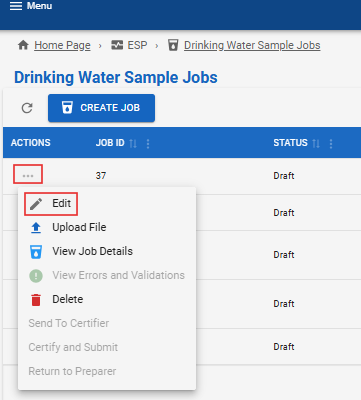
After making the necessary changes, click on the Save option under the Actions tab.
Users with role groups that grant them Write permissions to
the Drinking Water Sample Jobs can edit a Sample Job
from the ESP > Drinking Water Sample Jobs, clicking
on the three dots next to the sample job and
selecting Delete option.

Upon selection, an informational message will appear to confirm the deletion:

Once a sample job is deleted, a confirmation message will appear and the user will remain on the Drinking Water Sample Jobs page.
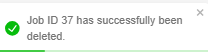
ESP has an Excel Template that can be used to generate a JSON to upload to ESP.
ESP users can refresh the reference values in the provided excel template as follows:
In DW-SFTIES, select your User ID in the top right corner, and then select My Profile. 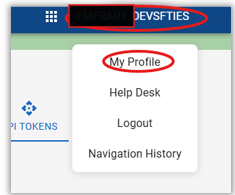
On the User Profile page, select API Tokens.
Under My API Tokens, click on Copy Access Token. The token will
be copied to your clipboard.
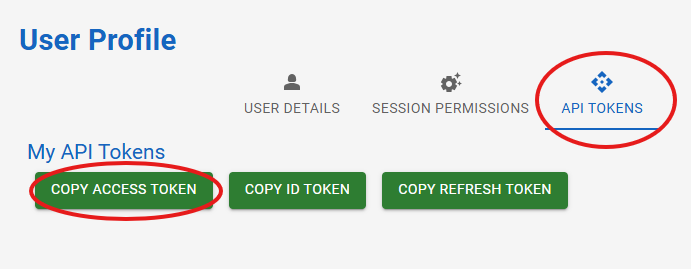
In the Excel Template, select Update Lookup Table.

Fill out the pop-up:
Access Token: Paste in your token from DW-SFTIES
Environment: Select “uat” from the dropdown
Location: Select the schema you are testing in, for example,
“dwp_ut”

Confirm. Wait for the pop-up to close on its own.
Scroll to the Attributes section of the template and view the Type Code dropdown.
Verify that your schema-specific reference values are now in the dropdown.
See Figure 15 for an example (this will vary depending on the
values in your schema).
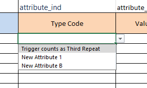
Users can utilize the Excel Template (provided for ESP Users) to add Chemical and Microbial Basic Information, Sample Results, and Associated Samples. The template can generate a JSON file that can be uploaded into ESP.
Follow the steps below to generate a JSON file that can be uploaded to ESP:
Navigate to GenChem or Micro tab in the Excel tab
Add all the information that you want to include in the JSON file. E.g., for a General Chemical enter Reporting Lab ID, Lab Sample Number, WS ID, Facility ID, Sampling Point ID, Collection Address, Collection Date, Collection Time, Lab Received Date, Lab Received Time, Lead Copper Sample Type, Sample Type, Sample Volume, Sample Volume UOM, Original Lab Sample Number, Original Reporting Lab ID, Original Collection Date, Original Water System Number, Comment, Collection Method, Sample Collector Name.
If you want to add Sample Results detail in the JSON file then fill out the Sample Result section with the Analyte, Analysis Result, Result UOM and other information associated with the Sample Result.
If you want to add the Field Results detail in the JSON file then fill out the Field Result section with the Parameter, Result, Result UOM and other information associated with the Field Result.
Select Generate JSON File and save the JSON file.
Note: The JSON files generated from the Excel temple can be uploaded to create a new job in ESP. The JSON file should be correct structurally. However, users must verify that the JSON file is correct and complete to create a job in ESP. If data in the template doesn’t meet validation rules, the user will see those errors on the Validation and Errors page after upload. The upload itself should succeed if the JSON structure is valid.
Users can search individual samples within jobs, via ESP > Search. Users can enter the search criteria to generate a sortable, filterable grid. Each search result contains a “Go to Job” link that opens the Sample Job Details page in a new tab for the selected Job ID.
Notes:
Users can only search on their current organization. Water Systems can only see samples for their Water System.
Lab can only see results that their lab submitted.
Primacy Agency Admins and Compliance Officers can see all results.
Search Criteria includes:
Job ID
Job Status
Water System No
Water System Name
Facility
Lab Sample No
Laboratory
Collection Date From
Collection Date To
Sample Type
Sample Category
Analyte Code
Method Code
Analysis Start Date From
Analysis Start Date To
Reporting Laboratory
Figure: Screenshot of the “Advanced Sample Search” page in ESP